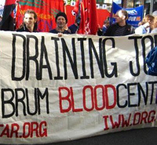

Submitted on Thu, 12/20/2007 - 10:11pm
 For Immediate Release:
For Immediate Release:
IWW Starbucks Workers Union
Contact: starbucksunion@yahoo.com
December 14, 2007
Coffee Giant Must Make Real Commitment to Diversity
New York, NY- The IWW Starbucks Workers Union (SWU) called today for the world’s largest coffee chain to honor slain civil rights leader Dr. Martin Luther King Jr. by paying workers a holiday premium on the federal holiday named for him. While Starbucks claims a commitment to racial diversity and pays a holiday premium on federal holidays including the Fourth of July and New Year’s Day, baristas receive no added compensation for working through the MLK Day holiday.
“Dr. King is a hero to many baristas and it’s only right that Starbucks- with its claimed commitment to diversity- treat his holiday with respect,” said Liberte Locke, a member of the SWU. “King stood up courageously for economic justice and no doubt would smile upon low-wage fast food workers taking home much needed extra money at the end of the day.”
Submitted on Thu, 12/20/2007 - 1:07pm
The NYC IWW has 4 major 460/640 events over the next 3 months. We are inviting fellow workers to New York to take part in these events. We can provide housing and any other needs you might have.
Too far and can't make it? Perhaps you'd like to do a solidarity event in your hometown!
We hope you can participate in some way.
PICKETS
Fri, Dec 28th, 7am - 5pm
at EZ Supply - this is the one-year anniversary of the firing massacres that took place at EZ Supply in which 15 workers were terminated for their IWW involvement - we will be turning trucks away
Sat, Jan 5th, 7am - 5pm
at Handyfat - this is the second shop to fire IWW workers in the massacre - one year ago, 9 workers were illegally terminated here - we will be turning trucks away
Submitted on Sat, 12/08/2007 - 2:48am
 By Ron Kaminkow
By Ron Kaminkow
Rail Labor activists from across North America are coming together to form a new cross-craft inter-union caucus that includes all rail workers in North America. Membership is open to union members from all the various unions (once known as the “brotherhoods”) in this new organization. In addition, special efforts will be made to include Canadian and Mexican workers as well.
To build this broad based unity and solidarity, the activists have launched Railroad Workers United (RWU). “We want everyone to understand that we are not creating another rail union to compete with those already in existence”, explains Jon Flanders, member of Machinists #1145 in Selkirk, NY. “Instead, we are creating an industry-wide caucus where we can all come together to help each other build the solidarity, support, democracy and strength that is missing in our individual craft unions. Who knows what the potentials and possibilities could be for such an organization of all rail labor.”
Submitted on Sat, 12/08/2007 - 2:28am
by IWW National Blood Service - IWW; Sunday, Dec 2 2007, 5:36pm
iww.nbs@googlemail.com
IWW launches second phase of fight against blood service centralisation plans
National Blood Service bosses in England and Wales plan to axe over 600 jobs and put patients lives across the National Health Service at threat.
The campaign, from workers in the National Blood Service and the IWW has become increasingly active, and the IWW is growing in the service. Now the IWW is launching a new phase of the campaign, to counter the employer offensive.
The IWW is fighting the closure of 10 blood processing centres across England. This is the largest campaign yet attempted by the IWW in the UK (BIROC), and has led to large scale regional mobilisations, and the distribution of 55,000 leaflets and 5000 targeted workplace bulletins.
Submitted on Thu, 12/06/2007 - 1:12pm
DETAILS:
UTAH PHILLIPS BENEFIT
SATURDAY, DECEMBER 15, 6PM
EAGLE'S CLUB - 2507 E. 25th St.
PERFORMERS: Charlie Parr and Bernie King; Pop Wagner & Friends; Gabe Barnett; Mary Dushane; Paul Metsa; Bill Hinckley & Judy Larson; Papa John Kolstad; Maureen McElderry; Peter Lang; Dakota Dave Hull; Phil Heywood.
ADMISSION $10
Utah Phillips, the “Golden Voice of the American Southwest,” and one of America’s longest-performing and most beloved folk singers, has had to end his 40-year career as a traveling musician, due to serious heart problems.
As a result, he is without the means to support himself. The Industrial Workers of the World, which Utah is both a member and a important supporter of, is holding a benefit to help Utah continue to live a decent life, and to help defray his overwhelming medical bills.
Utah is an American military veteran, rail-riding hobo, co-founder of the Joe Hill house, pacifist, former candidate for U.S. Senate (Utah), and former host of National Public Radio (NPR) program Loafer’s Glory: The Hobo Jungle of the Mind.
A major influence on American Folk Music, as well as on the culture of the modern American labor movement, he taught and inspired contemporary folk icons like Rosalie Sorrels, Kate Wolf, and Ani DiFranco, and his music has been covered by countless musicians.
Utah has many Minnesota connections that make it particularly appropriate for this benefit to be held here: he used to play in the hobo jungles at Pig’s Eye Landing, and in the Finnish Socialist Communes that played such an important role in the Minnesotan North.
This is our humble attempt to help out someone who desperately needs our help, and to pay him back a little for his countless contributions to our lives and world. I sincerely hope all can come and help support Utah in his current difficulties.